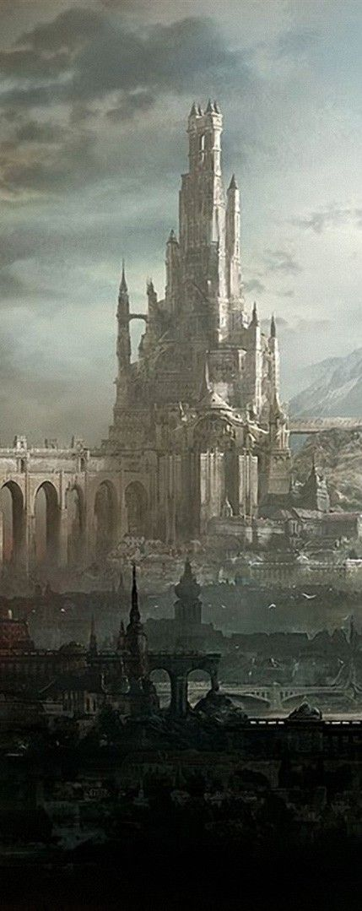

Personagens em Zainor
Todos os personagens em Zainor possuem um passado forte, são personagens com muito poder de luta, grandes nomes aparecem nessa lista. Os principais locais desse país trazem surpresas inesperadas, a capital é um verdadeiro baú de secredos.